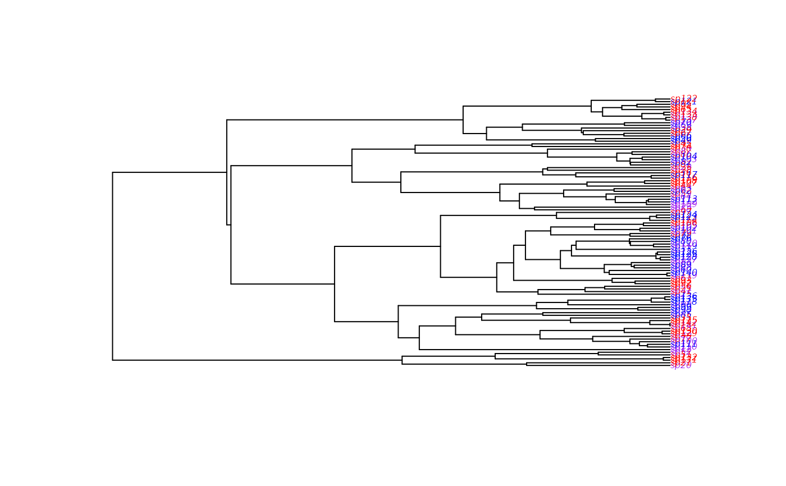

make.geosse.t.RdPrepare to run time dependent GeoSSE (Geographic State Speciation and Extinction) on a phylogenetic tree and character distribution. This function creates a likelihood function that can be used in maximum likelihood or Bayesian inference.
make.geosse.t(tree, states, functions, sampling.f=NULL, strict=TRUE,
control=list(), truncate=FALSE, spline.data=NULL)A phylogenetic tree, in ape “phylo” format.
A vector of character states, each of which must be 0
(in both regions/widespread; AB), 1 or 2 (endemic to one region; A or
B), or NA if the state is unknown. This vector must have names
that correspond to the tip labels in the phylogenetic tree
(tree$tip.label).
A named character vector of functions of time. See details.
Vector of length 3 with the estimated proportion of
extant species in states 0, 1 and 2 that are included in the
phylogeny. A value of c(0.5, 0.75, 1) means that half of
species in state 0, three quarters of species in state 1, and all the
species in state 2 are included in the phylogeny. By default all
species are assumed to be known.
The states vector is always checked to make sure
that the values are 0, 1 and 2 only. If strict is TRUE
(the default), then the additional check is made that every
state is present. The likelihood models tend to be poorly behaved
where states are missing.
List of control parameters for the ODE solver. See
details in make.bisse.
Logical, indicating if functions should be truncated to zero when negative (rather than causing an error). May be scalar (applying to all functions) or a vector (of length 7).
List of data for spline-based time functions. See
details in make.bisse.t
.
Please see make.bisse.t for further details.
make.geosse.t returns a function of class geosse.t.
The funtions is a vector of named functions of time. For
example, to have speciation rates be linear functions of time, while
the extinction and dispersal rates be constant with respect to time,
one can do
. The functions here must have t as their first
argument, interpreted as time back from the present. See
make.bisse.t for more information, and for some
potentially useful time functions.
The function has argument list (and default values):
f(pars, condition.surv=FALSE, root=ROOT.OBS, root.p=NULL,
intermediates=FALSE)
The parameter vector pars is ordered sA, sB, sAB,
xA, xB, dA, dB. Unresolved clade methods
are not available for GeoSSE. With three states, it would rapidly
become computationally infeasible. The arguments of this function are
also explained in make.bisse.
starting.point.geosse produces a first-guess set of parameters,
ignoring character states.
constrain for making submodels and reduce number
of parameters, find.mle for ML parameter estimation,
mcmc for MCMC integration, make.bisse and
make.bisse.t for further relevant examples.
The help page for find.mle has further examples of ML
searches on full and constrained BiSSE models. Things work similarly
for GeoSSE and GeoSSE.t, just with different parameters.
See make.geosse for explanation of the base model.
This computer intensive code is experimental!
FitzJohn R.G. 2012. Diversitree: comparative phylogenetic analyses of diversification in R. Methods in Ecology and Evolution. 3, 1084-1092.
FitzJohn R.G., Maddison W.P., and Otto S.P. 2009. Estimating trait-dependent speciation and extinction rates from incompletely resolved phylogenies. Syst. Biol. 58:595-611.
Goldberg E.E., Lancaster L.T., and Ree R.H. 2011. Phylogenetic inference of reciprocal effects between geographic range evolution and diversification. Syst. Biol. 60:451-465.
Maddison W.P., Midford P.E., and Otto S.P. 2007. Estimating a binary character's effect on speciation and extinction. Syst. Biol. 56:701-710.
Nee S., May R.M., and Harvey P.H. 1994. The reconstructed evolutionary process. Philos. Trans. R. Soc. Lond. B Biol. Sci. 344:305-311.
## Due to a change in sample() behaviour in newer R it is necessary to
## use an older algorithm to replicate the previous examples
if (getRversion() >= "3.6.0") {
RNGkind(sample.kind = "Rounding")
}
#> Warning: non-uniform 'Rounding' sampler used
## Parameter values
pars <- c(1.5, 0.5, 1.0, 0.7, 0.7, 2.5, 0.5)
names(pars) <- diversitree:::default.argnames.geosse()
## Simulate a tree
set.seed(5)
phy <- tree.geosse(pars, max.t=4, x0=0)
## See the data
statecols <- c("AB"="purple", "A"="blue", "B"="red")
plot(phy, tip.color=statecols[phy$tip.state+1], cex=0.5)

## Create your list of functions. Its length corresponds to the number
## of parameters (speciation, extinction and dispersal) you want to
## estimate.
## For an unconstrained model, at least 7 parameters are estimated for
## sA, sB, sAB, xA, xB, dA, dB.
## In the case you want to define a model with linear functions of
## speciation and extinction, and constant dispersal:
functions <- rep(c("linear.t", "constant.t"), c(5, 2))
## Create the likelihood function
lik <- make.geosse.t(phy, phy$tip.state, functions)
## This function will estimate a likelihood from 12 parameters.
argnames(lik)
#> [1] "sA.c" "sA.m" "sB.c" "sB.m" "sAB.c" "sAB.m" "xA.c" "xA.m" "xB.c"
#> [10] "xB.m" "dA" "dB"
## Imagine that you want to get an estimate of the likelihood from a
## known set of parameters.
pars <- c(0.01,0.001,0.01,0.001,0.01,0.001,0.02,0.002,0.02,0.002,0.1,0.1)
names(pars)<-argnames(lik)
lik(pars) # -640.1644
#> [1] -571.0267
## A guess at a starting point from character independent birth-death
## model (constant across time) .
p <- starting.point.geosse(phy)
#it only gives 7 parameters for time-constant model.
names(p)
#> [1] "sA" "sB" "sAB" "xA" "xB" "dA" "dB"
## it can be modified for time-dependent with a guess on the slopes of
## speciation and extinction rates.
p.t<-c(p[1],0.001,p[2],0.001,p[3],0.001,p[4],0.001,p[5],0.001,p[6],p[7])
names(p.t)<-argnames(lik)
## Start an ML search from this point (takes from one minute to a very
## long time depending on your computer).
if (FALSE) {
fit <- find.mle(lik, p.t, method="subplex")
fit$logLik
coef(fit)
}
## A model with constraints on the dispersal rates.
lik.d <- constrain(lik, dA ~ dB)
##Now dA and dB are the same parameter dB.
argnames(lik.d)
#> [1] "sA.c" "sA.m" "sB.c" "sB.m" "sAB.c" "sAB.m" "xA.c" "xA.m" "xB.c"
#> [10] "xB.m" "dB"
##The parameter dA must be removed from maximum likelihood initial parameters
if (FALSE) {
fit.d <- find.mle(lik.d, p.t[-which(names(p.t)=="dA")])
fit$logLik
coef(fit)
}